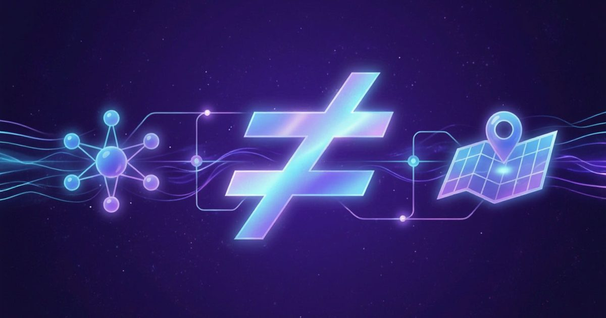
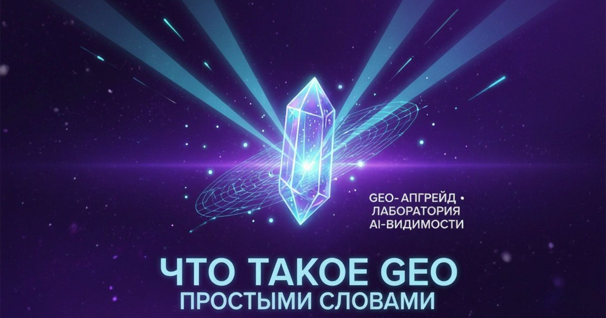
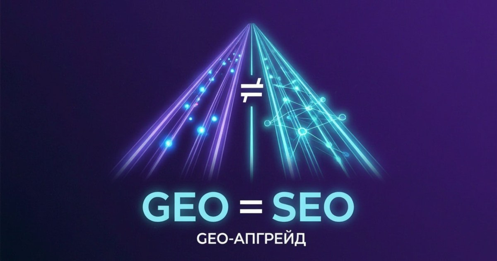

GEO-маркетинг ≠ геомаркетинг: почему ИИ путает вас с геотаргетингом
Чем GEO-маркетинг отличается от геомаркетинга и геотаргетинга. Реальный пример галлюцинации Алисы AI и мини-тест для вашего бренда.
8–10 минут
Читать статьюSECTION: ОСНОВЫ GEO
Для тех, кто только знакомится с темой: простые объяснения без терминологического перегруза. Что такое GEO, чем он отличается от SEO и почему нейросети путают бренды.

Чем GEO-маркетинг отличается от геомаркетинга и геотаргетинга. Реальный пример галлюцинации Алисы AI и мини-тест для вашего бренда.

Простое объяснение GEO: чем оно отличается от SEO, почему AI не видит бизнес, что такое цифровой призрак и как проверить AI-видимость бренда.

GEO и SEO: в чём разница, почему SEO не исчезает, как AI формирует рекомендации и что происходит с цифровым следом бренда.
С чего начать, если тема новая: три материала — от базовых определений до теста на путаницу терминов.